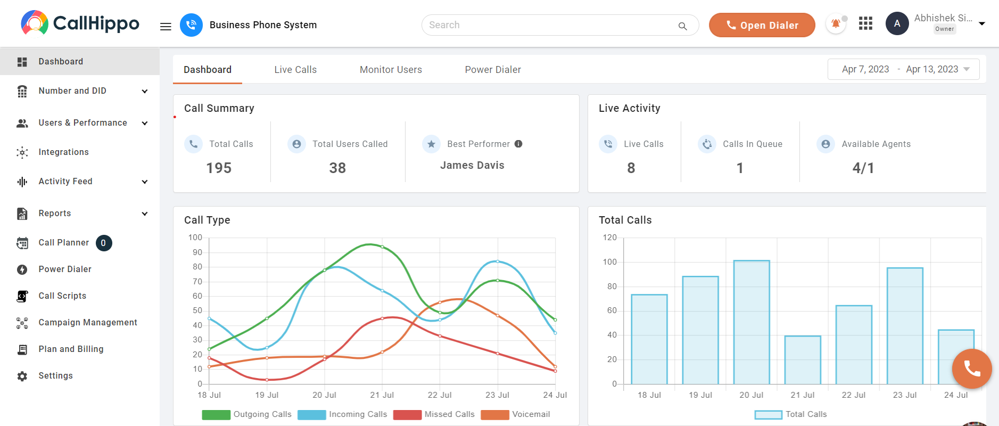
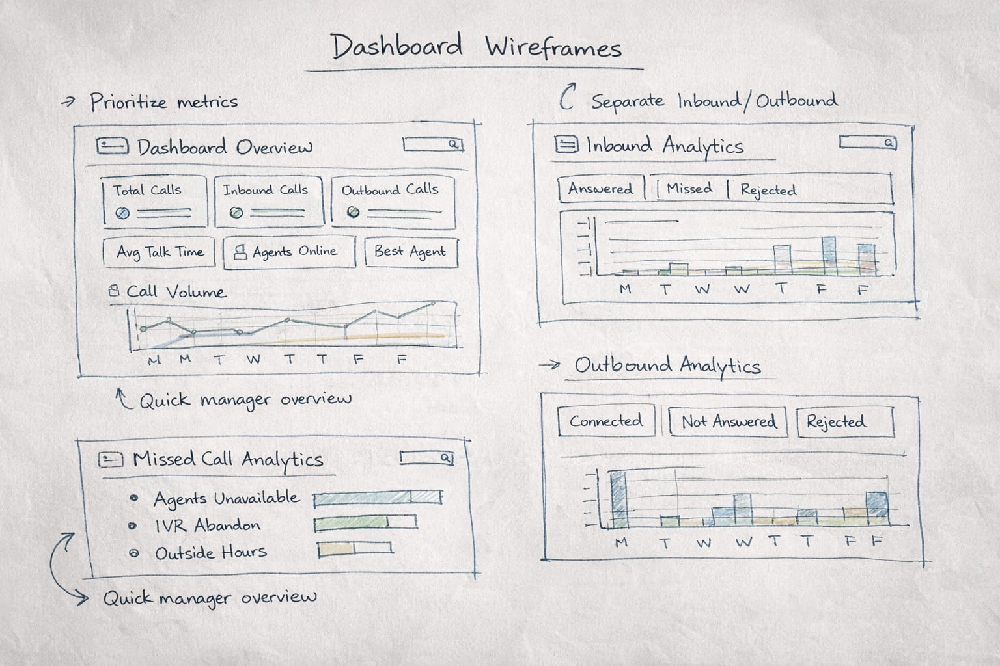
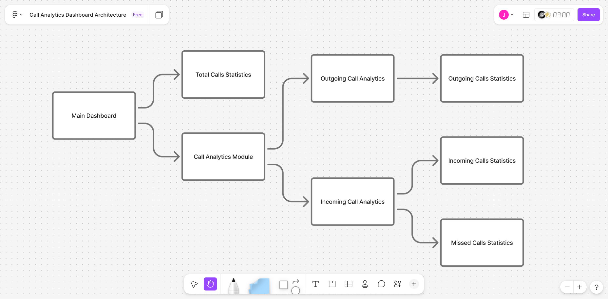

Designed the call analytics dashboard from zero
Overview & Context
CallHippo is a cloud-based business phone system used by sales and support teams to manage inbound and outbound calls across global markets.
While reviewing customer support tickets, I noticed a recurring pattern — customers kept asking for team performance data, and our support team was manually generating Excel reports from the backend to send them. That told me something important: the product wasn't surfacing the insights managers actually needed, so the work was falling on our support team every week. So I proposed a dedicated call-analytics dashboard, so managers could get this data themselves.
Role
Lead Product Designer
Responsibilities
UX Research, Information Architecture, UI Design, Engineering Collaboration
Collaborators
Product Manager, 2 Engineers, QA
Duration
3 Weeks

Problem
A pattern in customer support tickets revealed the real problem: managers kept asking for team performance data, and our support team was manually pulling Excel reports from the backend every week to send them. The product wasn't surfacing what managers needed — so the work was falling on us.
Managers opening the dashboard were confronted with a large collection of numbers with little context. Simple questions such as "Are we missing more calls this week?", "Is outbound performance improving?", or "Which agents are handling the most calls?" couldn't be answered inside the product — they had to be requested from support, who would pull and reconcile the data from the backend manually.
As a result:
Performance trends were difficult to identify: Managers had to manually export data and cross-reference screens to spot any patterns.
Missed calls went unexplained: Teams could see the count but had no way to understand the underlying cause.
Teams struggled to take action quickly: Without clear signals, operational decisions relied on guesswork rather than evidence.
The system generated data, but it did not generate insight.

Old Dashboard UI
Constraints
Every design decision on this project came out of a simple triangle — time, scope, and quality. You can only get two at once. Here is which constraints were fixed, and which one I traded.
Time — Fixed
Three weeks, end to end. CallHippo had an aggressive release calendar. No room for broad user testing or polishing every interaction.
Quality — Fixed
The dashboard had to work on the first open. Managers would use it daily — a confusing version one would cost trust with every sales manager who opened it.
Scope — Traded
With time fixed and quality high, scope was where I made room. That led directly to the two-layer split — the main dashboard carries only the 6 questions managers check daily. Everything else lives in the analytics module.
Design Goals
Before exploring solutions, I defined three goals that would guide the redesign.
Goal 1
Make call performance understandable within seconds of opening the dashboard.
Goal 2
Separate monitoring from investigation — quick checks on the dashboard, deeper analysis in a dedicated module.
Goal 3
Turn data into actionable insight — highlight patterns and root causes that help teams make operational decisions, not just display metrics.
Design Strategy

📊 Prioritize the most important metrics
The dashboard should immediately communicate the most critical signals without overwhelming users.
🔍 Separate overview from deep analysis
Quick monitoring belongs on the dashboard. Deeper insights belong in a dedicated analytics module.
📈 Use visualization to reveal patterns
Charts should help users identify trends instantly instead of requiring manual interpretation.
Understanding the Users
To better understand how teams used the dashboard, I interviewed sales managers, support team leads, and call center supervisors. Despite their different roles, the frustration was consistent: the dashboard showed numbers but did not help them understand what was happening.
Two roles — each with a different need from the dashboard
Sales Manager
"I need to understand how my team is performing on calls, but the dashboard just gives me numbers. I still have to export the data to see trends."
Support Team Lead
"We know we're missing calls, but I can't tell why. Are agents unavailable? Are customers dropping in IVR? The dashboard doesn't explain it."
Key Insights
These conversations confirmed that the issue was not missing data — it was missing structure and clarity. The same patterns surfaced consistently across team sizes and industries.
Insight 01
Information hierarchy was unclear
Critical signals like missed calls and agent performance were buried among less important metrics. Users couldn't quickly identify what needed their attention.
Insight 02
Inbound and outbound calls required different analysis
Sales teams cared about outbound connection rates and campaign performance. Support teams cared about inbound call handling and missed calls. A single analytics view served neither role effectively.
Insight 03
Missed calls lacked root-cause visibility
Teams could see the number of missed calls but had no way to understand the reason behind them. Without this context, operational improvements relied on assumptions rather than evidence.
Key User Needs
Sales Manager
Pain: Had to export data manually to identify performance trends because the dashboard only showed static numbers.
Consequence: Decision-making was delayed and relied on guesswork rather than live insights.
Need: A dashboard that surfaces outbound call trends and team performance at a glance without manual data work.
Support Team Lead
Pain: Could see missed call counts but had no way to identify why calls were being missed.
Consequence: Operational fixes were based on assumptions, not evidence, leading to ineffective changes.
Need: Categorized missed call data with root-cause visibility so the team can take targeted action.
Key Design Decisions
Separate quick monitoring from deeper analysis by introducing a two-layer dashboard structure. The main dashboard gives managers a fast overview, while the analytics module helps them investigate performance in detail.
Alternative considered:My first version kept everything on a single page — the overview metrics at the top, and the advanced analytics module directly below.
Why I rejected it:Both sections fought for the same attention. The page got long and dense. Managers had to scroll to find anything, which killed the quick-glance quality I wanted from the overview. Splitting them into two layers gave the main dashboard back its "understand within seconds" feel, and let the analytics module focus on deeper investigation.
Prioritize the metrics managers check most often such as total calls, inbound and outbound activity, average talk time, and agent performance so the team can understand call performance immediately.
Alternative considered:Picking the metrics from intuition, or mirroring the old dashboard's list.
Why I rejected it:I grounded the selection in two inputs — competitor analysis of peer tools, and the pattern of questions in support tickets. The metrics that consistently showed up in both are what made the final cut.
Create dedicated analytics views for inbound and outbound calls so sales teams and support teams can focus on the data that matters to their daily work.
Make missed calls easier to diagnose by breaking them into clear categories like agents unavailable, IVR abandonment, and outside business hours.
Use visual charts that reveal patterns quickly so managers can see trends in call activity without needing to manually interpret raw numbers.
Solution
The redesigned system introduced a two-layer dashboard architecture. This structure allows managers to monitor performance quickly and explore details only when necessary.
Architecture Diagram

Simplified main dashboard
Provides a quick overview of call activity and team performance. Managers can understand the overall call situation within seconds of opening the dashboard.
Dedicated analytics module
Helps managers investigate inbound calls, outbound activity, and missed call patterns without jumping across multiple screens.
Main Dashboard
The original dashboard displayed many metrics without prioritization, making it difficult for managers to quickly understand team performance. The redesigned dashboard highlights the six key metrics managers check most frequently.
Design rationale
Total Calls, Inbound Calls, Outbound Calls, Average Talk Time, Active Agents, and Best Performing Agent are presented using large card components with strong visual hierarchy. The number is emphasized first, followed by the label and supporting context.
Managers can now open the dashboard and understand the overall call situation within seconds. The dashboard effectively functions as a daily operational snapshot.
Incoming & Outgoing Analytics
Inbound and outbound call data were previously aggregated into a single analytics view, making it difficult for both sales and support teams to interpret performance. The analytics module separates them into two dedicated views.
Missed Call Analytics
Missed calls were displayed only as a single number, offering no insight into the underlying cause. The redesigned view categorizes missed calls into five operational reasons.
Not answered by agent — Agent was available but the call was not picked up.
All agents unavailable — No agents were free to take the call at that moment.
Abandoned during welcome message / in IVR / outside business hours — A segmented horizontal bar chart highlights the dominant cause at a glance, allowing teams to diagnose issues and take targeted action.
Results
Post-launch signals
After launch, I tracked two signals:
Support ticket volume
The "send me team performance data" tickets — the same pattern that surfaced the original opportunity — noticeably decreased after launch. Managers were pulling the data themselves, and our support team stopped generating those Excel sheets manually every week.
Heatmap analysis
Post-launch click tracking showed the new Call Analytics module becoming one of the most-used areas of the dashboard — particularly the missed-call root-cause view. The two-layer separation was being used as intended.
I did not capture exact before/after numbers at the time, but both signals pointed the same way.
User experience outcomes
Faster performance visibility
Managers can now understand call activity within seconds of opening the dashboard — no exports, no manual data work.
Root-cause visibility for missed calls
Missed calls are categorized into actionable causes instead of being displayed as a single metric, enabling targeted operational fixes.
Structured analytics for each team
Dedicated analytics views allow sales and support teams to investigate call performance without navigating across multiple disconnected screens.
What I Learned
Data-heavy interfaces require strong hierarchy
The original dashboard had sufficient data. The real problem was prioritization. Deciding what to surface first had more impact than adding new data.
Visualization design is decision design
The right chart can communicate patterns instantly and eliminate the need for manual interpretation. Choosing chart types based on user questions — not available data — was a key shift.
Analytics tools should enable decisions
Every analytics feature should be designed around a specific operational question. Early engineering collaboration ensured the analytics design aligned with the underlying data structure.